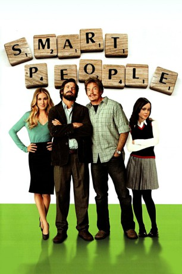

#7871 Smart People
 
 IMDB-Wertung: 6.2 / 10
IMDB-Wertung: 6.2 / 10  Tomatometer: 50
Tomatometer: 50  Metascore: 0
Metascore: 0 
Professor Lawrence Wetherhold verbirgt seine Depressionen nach dem Tod seiner Frau gekonnt hinter einer Fassade aus Arroganz und Zynismus, unter der vor allem seine Studenten zu leiden haben. Erst ein Unfall oder besser die damit verbundene Aufmerksamkeit der attraktiven Ärztin Janet reißen Lawrence aus seiner Lethargie. Seine hochintelligente Tochter Vanessa, ein introvertierter Teenager ohne soziale Bindungen, beäugt die sich anbahnende Romanze allerdings mit unverhohlener Skepsis. Als auch noch Lawrences höchst unkonventioneller Adoptivbruder aufgrund akuter Geldsorgen bei den Weatherholds einzieht, geraten die Familienverhältnisse völlig aus den Fugen.
Jahr: 2008
Dauer: 94 Minuten
FSK: 0
Land: USA Studio: MiramaxTonspuren: DD5.1 - ,
Untertitel:
Auflösung: 1080p (1920x800) Größe: 8437 MB
Genre: Drama, Komödie, Liebe
Regisseur: Noam Murro
Drehbuch: Mark Poirier
Soundtrack: Nuno Bettencourt
Darsteller:
 Dennis Quaid als Lawrence Wetherhold
Dennis Quaid als Lawrence Wetherhold Sarah Jessica Parker als Janet Hartigan
Sarah Jessica Parker als Janet Hartigan Thomas Haden Church als Chuck Wetherhold
Thomas Haden Church als Chuck Wetherhold Ellen Page als Vanessa Wetherhold
Ellen Page als Vanessa Wetherhold Ashton Holmes als James Wetherhold
Ashton Holmes als James Wetherhold- Christine Lahti als Nancy
- Camille Mana als Missy
 David Denman als William
David Denman als William- Robert Haley als Roth
- Patrick Sebes als Curtis
- Richard John Walters als Parking Lot Attendant
 Scott A. Martin als Weller
Scott A. Martin als Weller Patrick Jordan als Waiter
Patrick Jordan als Waiter- Amanda Jane Cooper als Brooke
 Aaron Bernard als Pool Shark (uncredited)
Aaron Bernard als Pool Shark (uncredited) John W. Iwanonkiw als Diner Guest (uncredited)
John W. Iwanonkiw als Diner Guest (uncredited) William Kania als Man at Luggage Pick-up (uncredited)
William Kania als Man at Luggage Pick-up (uncredited)- Benjamin Jeran McGinn als Student (uncredited)
- Joe Pawlenko als Bar Patron (uncredited)
- Don Wadsworth als Hadley
- Kevin James Doyle als Rodney
- Paul Huber als Ben
- Iva Jean Saraceni als Volunteer
- Jane Mowder als Knight
- Adam Kroloff als Talbot
- Kiley Caughey als Linsey
- Christy Harst als Waitress
- Rick Warner als Bloomberg
- Barret Hackney als Joseph
- José A. Rivas als Student
- Tony Amen als Dining Patron (uncredited)
- Elysia Annacini als Professor (uncredited)
- Stephanie Bankosh als Airport Patron (uncredited)
- Will Guffey als Student (uncredited)
- Jason Menz als Diner Patron (uncredited)
- Jackson Nunn als Club Scene: Dining (uncredited)
- Jon Yu als Student (uncredited)
Datei: X:\2008(N-Z)\Smart People (2008, FSK0, 1920x800).mkv seit 29.12.2017
Festplatte: HD 2008(G-Z)-2009(A-F)
 Es gibt insgesamt 91 Filme in der Gruppe '2008(N-Z)'
Es gibt insgesamt 91 Filme in der Gruppe '2008(N-Z)'